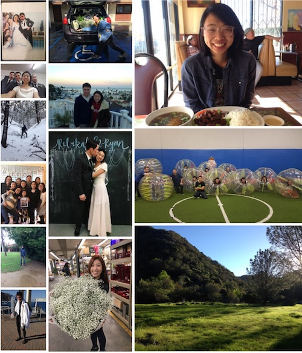

February Update
These past couple months have been a whirlwind (not the Hosea 8:7 kind). We got married on January 22nd, so January was filled with preparations, bridal festivities, family & friends coming into town and our honeymoon in Frazier Park, then Catalina Island! It was a blessing to spend time with both of our families join together (especially Rebekah’s family because of the divorce) and praise the Lord as one body at the wedding.

The abundant rain has been reminding us of how much God provides for all the plants and animals; how much more has He been providing for us and guiding our steps. We know that as we move on towards Cambodia, and anything else life brings, we will be faced with temptations to be angry with God or trust in other things. Fighting to remember this time especially will really help put things into perspective. Praise Him for how He is good in all His ways. All things are in His hands!
Now…
Working Ryan (with sandwich in hand) We ended up moving boxes and belongings a couple times, but are finally settling down with Rebekah’s parents in their house!
- We have been practicing Khmer (Cambodian language ភាសាខ្មែរ) every morning during breakfast, learning to read, write, and understand (<- kinda important, huh?).
- Ryan is continuing to work hard on programming, while Rebekah’s works part-time with children in classrooms and homes.
Our brother, Sam, really taking the reins directing our church’s young adult group! He is another co-leader for the men’s small group
- Church ministries: Ryan is still teaching a survey of the OT for our English group Bible study. Small groups for men and women (Ryan is co-leading for men) are starting up; this is important for accountability, unifying the body, and edification! Children’s ministry for Rebekah started a new curriculum and are trying new things to teach thankfulness, obedience, and a clearer understanding of the Gospel.
- While staying at Rebekah’s parents is a huge help financially, right now it looks like we won’t be able to save up enough to leave for Cambodia before October 2017 (but Rebekah is hopeful for July!). Even still we’re very thankful for all the opportunities and needs that we’ve been given while here in the States!
Please pray for…
Perseverance and motivation as we work hard to get to Cambodia as soon as possible
Wisdom and love for Rebekah’s family as we live as witnesses in their home
That we would trust in God wholly and in God alone, knowing that His timing and plan are perfect.
Thank you, again and again, for all your prayers and support! God is so good.